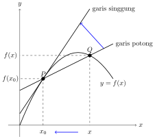

4.1
Garis Singgung dan Laju Perubahan
Definisi 4.1.1.
Misal $x_0$ titik di daalam domain fungsi $f$. Garis singgung kurva
$y=f(x)$ di titik $P(x_0,f(x_0))$ adalah garis dengan dengan persamaan
$$y-y_0=m_s(x-x_0)$$ dengan $$m_s=\displaystyle \lim_{x\to x_0}
\frac{f(x)-f(x_0)}{x-x_0}$$ asalkan limit tersebut ada.

Kecepatan rata-rata $v_r$ dari suatu partikel dalam interval waktu $[t_0,t_0+h]$, dengan $h>0$, didefinisikan dengan $$v_r=\frac{\text{jarak yang ditempuh}}{\text{waktu tempuh}}=\frac{s(t_0+h)-s(t_0)}{h}$$ di mana $s=s(t)$ merupakan fungsi posisi dari partikel tersebut. Adapun kecepatan sesaat $v_s$ dari suatu partikel pada waktu $t=t_0$ adalah $$v_s=\lim_{h\to 0}v_r=\lim_{h\to 0}\frac{s(t_0+h)-s(t_0)}{h}.$$Contoh 1
Diberikan $f(x)=1+x^2$ dan $x_0=-1$. Dapatkan kemiringan garis
singgung pada kurva $y=f(x)$ di $x=x_0$.
Pembahasan
Fungsi $f(x)$ terdefinisi untuk $x\in \R$ sehingga $x=-1$ termasuk
ke dalam domainnya. Misalkan $m_s$ kemiringan garis singgung kurva
$y=f(x)$ di $x=x_0=-1$. \begin{align*} m_s&=\lim_{x\to x_0}
\frac{f(x)-f(x_0)}{x-x_0}\\ &=\lim_{x\to -1}
\frac{1+x^2-(1+(-1)^2)}{x-(-1)}\\ &=\lim_{x\to -1}
\frac{1+x^2-(1+1)}{x+1}\\ &=\lim_{x\to -1} \frac{1+x^2-2}{x+1}\\
&=\lim_{x\to -1} \frac{x^2-1}{x+1}\\ &=\lim_{x\to -1}
\frac{(x+1)(x-1)}{x+1}\\ &=\lim_{x\to -1}(x-1)\\ &=-1-1\\ m_s&=-2
\end{align*}
Contoh 2
Diberikan $f(x)=\displaystyle \frac{1}{2x}$, $x_0=2$, dan $x_1=4$.
Dapatkan laju perubahan rata-rata, $v_r$, pada interval $[x_0,x_1]$
dan laju perubahan sesaat, $v_s$, di $x=x_0$.
Pembahasan
Perhatikan bahwa $x_0=2$ dan $x_1=4$ sehingga $h=x_1-x_0=4-2=2$.
Laju perubahan rata-rata $v_r$ dalam interval waktu $[2,4]$ dengan
$f(x)=\displaystyle \frac{1}{2x}$ adalah sebagai berikut.
\begin{align*} v_r&=\frac{f(x_0+h)-f(x_0)}{h}\\
&=\frac{\displaystyle \frac{1}{2(2+2)}-\frac{1}{2(2)}}{2}\\
&=\frac{\displaystyle \frac{1}{2(4)}-\frac{1}{4}}{2}\\
&=\frac{\displaystyle \frac{1}{8}-\frac{2}{8}}{2}\\
&=\frac{\displaystyle -\frac{1}{8}}{2}\\ v_r&=-\frac{1}{16}
\end{align*} Adapun laju perubahan sesaat $v_s$ di $x=x_0=2$,
yaitu: \begin{align*} v_s&=\lim_{h\to 0}v_r\\ &=\lim_{h\to
0}\frac{f(x_0+h)-f(x_0)}{h}\\ &=\lim_{h\to
0}\frac{f(2+h)-f(2)}{h}\\ &=\lim_{h\to
0}\frac{\displaystyle\frac{1}{2(2+h)}-\frac{1}{2(2)}}{h}\\
&=\lim_{h\to
0}\frac{\displaystyle\frac{2}{4(2+h)}-\frac{2+h}{4(2+h)}}{h}\\
&=\lim_{h\to 0}\frac{\displaystyle\frac{2-(2+h)}{4(2+h)}}{h}\\
&=\lim_{h\to 0}\frac{2-(2+h)}{4(2+h)h}\\ &=\lim_{h\to
0}\frac{2-2-h}{4(2+h)h}\\ &=\lim_{h\to 0}\frac{-h}{4(2+h)h}\\
&=\lim_{h\to 0}\frac{-1}{4(2+h)}\\ &=\frac{-1}{4(2+0)}\\
v_s&=-\frac{1}{8} \end{align*}
Latihan!
Diberikan $f(x)=2x^3$, $x_0=1$, dan $x_1=3$. Dapatkan laju
perubahan rata-rata, $v_r$, pada interval $[x_0,x_1]$ dan laju
perubahan sesaat, $v_s$, di $x=x_0$.
Jawab:
EAS 2023/2024
Diberikan fungsi $\displaystyle f(x)=\frac{x+3}{x+2}$. Dapatkan
persamaan garis singgung kurva $y=f(x)$ di $x=-3$.
Jawab: